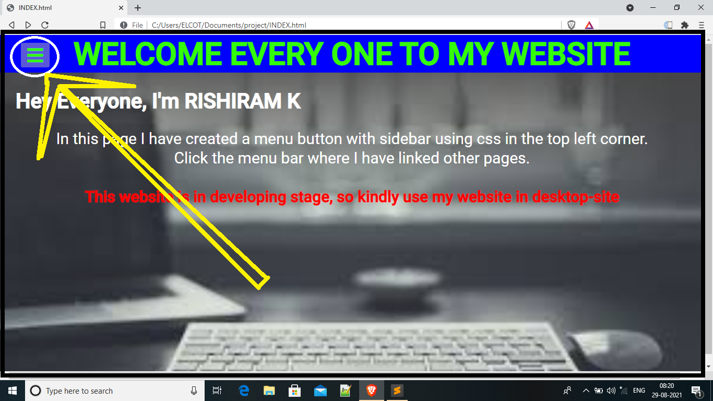

Hey Everyone, I'm RISHIRAM K, I request you to use this page in desktop
In this page I have created a menu button with sidebar using css in the top left corner. Click the menu bar where I have linked other pages.  This website is in developing stage, so kindly use my website in desktop